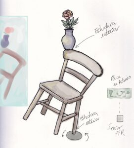

 In Memoriam (2026) Proyecto basado en el concepto de entrelazamiento cuántico: dos partículas entrelazadas donde el estado de una depende de la otra. Medio: Dossier conceptual y práctica escénica, 2026